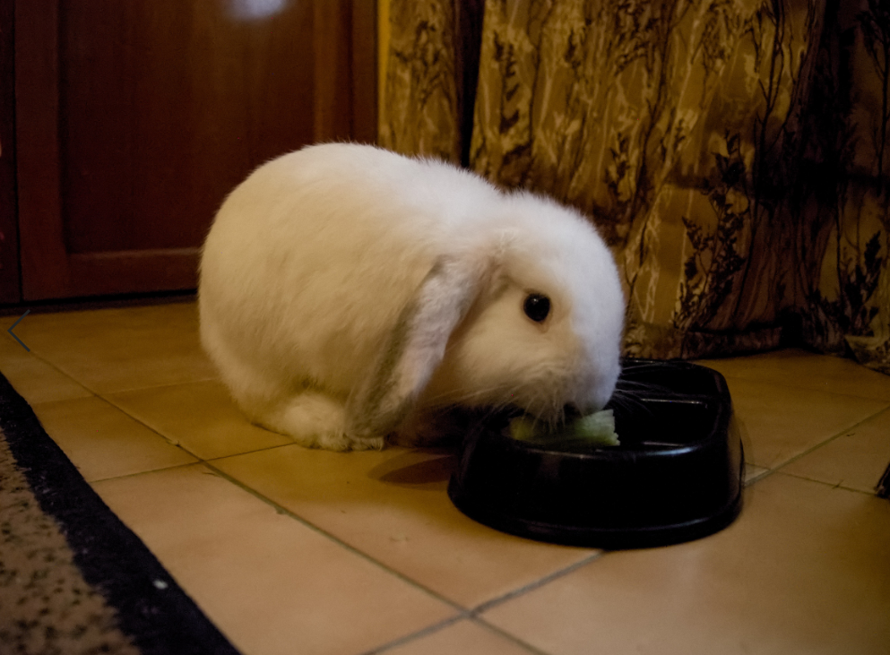
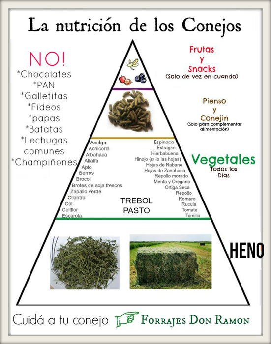
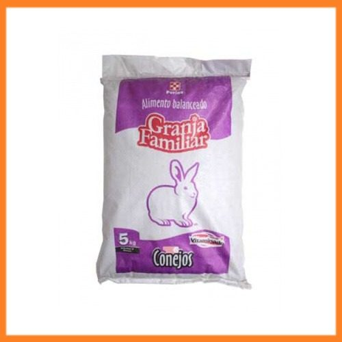
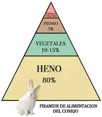

Uy! Que sabroso va a estar este post 🐰🌿🍌🍏

Haha! esa Valentina ya anda de golosa, bueno como lo dice el título les voy a contar qué come Valentina para estar tan chula. Hay 4 pilares de alimentos que un conejo debe consumir (el primero es el más importante de todos):
- Heno
- Verduras y algunas hierbas, plantas o flores
- Pellets
- Frutas

Heno
El heno es esencial para los conejos ya que les ayuda para la digestión, también ayuda a evitar que sus dientes crezcan demasiado, ya que los dientes de un conejo nunca dejan de crecer y esto les puede causar maloclusión (creciemiento excesivo e irregular de sus dientes). Existen distintos tipos de heno, el de alfalfa sólo es recomendable para los gazapos pero una vez que crecen (7 meses de edad) los conejitos deben dejar de consumirlo ya que les puede causar sobrepeso, el cambio de heno tiene que ser gradual. El heno de alfalfa a veces lo recomiendan los veterinarios para cuando un conejo esta enfermo y ha perdído mucho peso(les prometo que les cuento más de esto en el post que haré del Vet de Valentina 😉).
EL heno de alfalfa lo puedes encontrar en forrajeras locales, el heno que consume Valentina es el de Timothy Hay, lo puedes conseguir en Amazon o en +Kota, este heno es de alta calidad por lo que el precio es alto, sin embargo, una opción más barata es comprar el heno de avena, lo puedes conseguir en forrajeras locales o en mi caso yo compre una paca de heno en Mercado Libre.
Verduras, plantas, hierbas y flores
Los conejitos también pueden comer verduras pero consulta primero cuales son las que ellos pueden consumir, en el caso de Valentina yo le doy apio,lechuga y espinacas. Plantas también come y lo que me he dado cuenta es que ella sabe cuales puede comer y cuales no, pero si no estas muy seguro mejor investiga, mi mamá tiene un jardín lleno de sabilas y lo que yo investigue es que ellos pueden comer un poco ya sea por accidente pero no es recomendable que lo hagan en exceso.
Las hierbas también deben ser tratadas con cuidado ya que tienes que tener precaución con lo que consumen. Cuando Valentina sale de paseo le gusta comer zacate y cuando va a casa de sus abuelitos siempre le cortan pasto, lo lavan y se lo ponen en su platito para que lo disfrute. Las flores también les encantan, sólo una vez ví a Valentina comer pétalos de rosas por sí sola. En una ocasión le intenté dar un diente de león porque leí que les gustaba mucho a los conejos, pero esa Valentina ni caso le hizo.
Pellets
Las pellets también llamadas pienso o conejina es un alimento seco comprimido para conejos, son como sus mini croquetas. Las puedes conseguir en mercados, en tiendas para mascota y forrajeras locales. Yo le compro la conejina de Purina ya que intenté darle de otras y no le gustaron, incluso traté de engañarla porque para mí se veían exactamente igual pero ella sabía que no eran las de su marca favorita y me hacia fuchi (incluso sentí que me dijo "me quieres ver la cara de estupida!" 😂). Abajo les dejo una foto del costalito de su conejina, es de 5kg y me costó $50.00 pesitos mexicanos.

Frutas
Ya por último les hablaré del top 3 de sus frutas favoritas, a valentina le encanta el platanito 🍌, en segundo lugar estan las manzanas 🍎 🍏 y en tercer lugar el durazno 🍑. También la piña y la papaya le gustan y le sirven mucho para su digestion, sin embargo es importante mencionarles que las frutas sólo se tienen que dar como premio de 1 a 2 veces a la semana máximo ya que su alto contenido en fructuosa (azúcar) no es recomendable para los conejitos.
Les dejo este link de la pagína de La Madriguera por si quieren saber más sobre qué pueden y qué no pueden comer los conejos, también les dejo esta imagen para que sepan las cantidades de comida que deben darle a sus conejitos 👇

Si les gustó este post no olviden compartirlo, también si tienen dudas pueden dejarlas en los comentarios y estaré respondiendo a la brevedad.
Mis Herramientas de trabajo
Laptop: Acer Aspire R15 Convertible
Cámara: Nikon D5300
Celular: Oneplus 3T